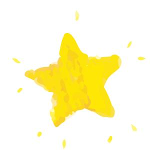
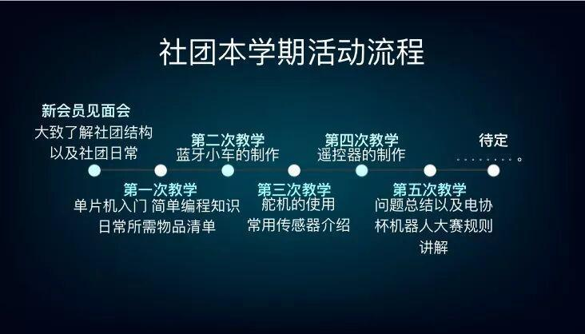

新生交流会圆满结束~
为加深新社员对电协的认识，促进新社员之间的沟通，电协于昨晚在综合楼举办了新生交流会。感谢各位同学的到来呀❤

本次交流会分为两个会场，6:30交流会正式开始。
首先主持人介绍了电协教学组组长，相信大家对自己的组长也都有了印象。
然后emmm...重点部分（如下）
两位幽默的讲话使新成员对电协有了更深刻的了解，让电协的模样，在我们眼前更加的清晰。
紧接着就是部门介绍
不论技术部还是行政部，只要你感兴趣，电协永远欢迎你！

emmm...活动安排什么的,在PPT抄来的图😮

下一部分😁
此次新生交流会到这就圆满结束啦！撒花٩(๑^o^๑)۶。希望在未来的日子里，这群刚注入电协的新鲜血液能够书写新的辉煌！

编辑：杜遇涵